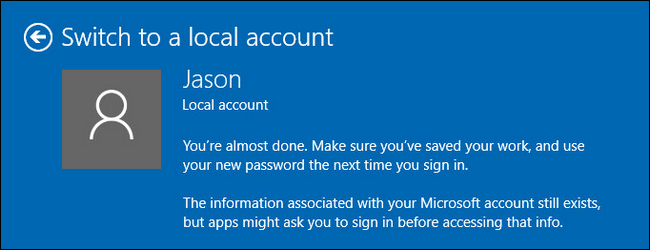

How-To Geek
How to Make Windows 10 Look and Act More Like Windows 7
If you’ve upgraded to Windows 10 but don’t love what you see, there are ways to make Windows 10 look and act like Windows 7. That way, you can get the familiar interface you love while still taking advantage of Windows 10’s other useful features.
![]()
![]()
Get a Windows 7-like Start Menu with Classic Shell
![]()
Microsoft sort of brought the Start menu back in Windows 10, but it’s been given a big overhaul. If you truly want the Windows 7 Start menu back, install the free program Classic Shell. You can even download images of the Windows 7 Start orb and use that on the Taskbar for the Start menu. Not only is it more similar to Windows 7’s start menu, but it’s insanely customizable, so you can get the Start menu of your dreams.
Make File Explorer Look and Act Like Windows Explorer
![]()
There are a lot of changes in Windows 10’s File Explorer compared to Windows 7’s Windows Explorer. If you’re not happy with the changes, you can get the look and feel of Windows 7’s Windows Explorer back with a free tool called OldNewExplorer, along with some tweaks to the settings and registry that get rid of the ribbon, hide Quick Access, and lots more. Check out our full guide for all the tweaks.
Add Color to the Window Title Bars
The title bars on windows in Windows 10 are white by default. But that’s boring! Thankfully, the latest version of Windows 10 lets you add some color to the title bars in the settings, letting you make your desktop a little more like Windows 7. Just head to Settings > Personalization > Colors to change them. You can read more about the color settings here.
Remove the Cortana Box and Task View Button from the Taskbar
The Windows 7 Start menu included a Search box right on the menu. In Windows 10, that search box was moved to the Taskbar and integrated into Cortana (personal assistant) and the Task View (virtual desktops) button was added to the Taskbar as well. Neither Cortana nor Task View was available in Windows 7. So, to continue our conversion to a Windows 7-like experience, you can remove both of them from the Taskbar–you just need to right-click on the taskbar. De-select “Show Task View Button” and go to Cortana > Hidden.
Disable the Action Center
The Action Center is a new feature of Windows 10 that’s available by clicking the message bubble on the right side of the Taskbar. It’s handy for seeing all recent notifications you might have missed, and frankly, we think it’s worth keeping–it’s one of the more useful updates to Windows 10. But, if you really want to get rid of it, you can disable the Action Center by going to Settings > System > Notifications & Actions and clicking “Turn System Icons On or Off”. From there you can turn Action Center off with a simple slider.
You will still see popup notifications above your system tray. You just won’t be able to view them after the fact if you miss them.
![]()
![]()
Log In with a Local Account Instead of a Microsoft Account

As of Windows 8, your Windows account is tied to your Microsoft account by default, which means you log in to your computer with your Microsoft email and password. If you want to return to using a local account, like you did in Windows 7, you can revert your Windows 10 account to a local one using these instructions. You can also create a new local account that isn’t tied to your Microsoft account, if you prefer.
![]()
Play Games like Solitaire and Minesweeper Without Ads
Windows 7’s ever-popular free games, such as Solitaire and Minesweeper, were removed in Windows 8. Windows 10 includes the Microsoft Solitaire Collection app, but the game will show you banner ads and full-screen video advertisements, bugging you for $20 per year to get the ad-free versions. Thankfully, there are plenty of free (and ad-free) versions of these popular games out there. Check out this guide for a few of our favorites.
Disable the Lock Screen (on Windows 10 Enterprise)
The lock screen is pretty, but is really more of a touch screen-friendly feature. It isn’t really necessary or particularly useful on the desktop. It used to be the case if you were using any version of Windows 10, you could disable the lock screen. However, as of the Anniversary Update of Windows 10, you can only disable the lock screen if you are using Windows 10 Enterprise. So, if you’re using any other version of Windows 10, you’re stuck with the lock screen for now.
Easily Access the Classic Personalization Window
By default, when you right-click on the Windows 10 desktop and select Personalize, you are taken to the new Personalization section in PC Settings. However, the Personalization window from Windows 7 is still available in the Control Panel. You can add a shortcut to the desktop so you can quickly access the classic Personalization window if you prefer it.
Right-click on the desktop and select New > Folder from the popup menu.
Copy and paste the following text into the name of the folder and press Enter.
Personalization.{ED834ED6-4B5A-4bfe-8F11-A626DCB6A921}
The icon changes to the personalization icon and the name of the folder also changes to Personalization. Double-click this icon to access the classic Personalization window in the Control Panel.
It isn’t as good as right-clicking, but at least you have a quick shortcut now.
Set the Windows 7 Wallpaper as Your Desktop Background
Last, but certainly not least, you can change the desktop background to the classic Windows 7 wallpaper. You can grab it right here–just right-click on the image and save it somewhere on your computer. Then, right-click on the image in File Explorer and choose “Set as Desktop Background.”
Now, you can pretend that you never upgraded to Windows 10, at least until Microsoft forces Windows 10 updates down your throat.
- Published 10/31/16
![]()
![]()
![]()
![]()
![]()
![]()
![]()
![]()
![]()
{kind=link}
Yup! That article cried out for the last line, and you added it. Thank you.
That's the trouble with WIN 10. No matter how many hours one spends customizing it, the next "update" can blow it all away.
It is such a sad commentary on the last few years of Windows. Why do users have to go through all these gymnastic exercises to get their OS to look and act the way users want? Clearly, they have lost focus and forgotten to give user what they want and need--not what the millennials at Microsoft things users want and need. If nothing else, it makes a strong case to remain with Windows-7. Whatever "security" enhance came with Windows-10 are more than negated with all the accompanying "bad stuff" that comes with it.Thank you, for helping those of use who through no fault of their own got sucked into Windows-10 and really want the Windows-7 experience.
These are not the only gripes one may have. I have a major issue with their networking system. I have 3 - 4 devices connected to one particular router. They merrily go and access internet without any problem. However this STUPID Win 10 system even when connected to the router which has been configured as a "home network" keeps showing "no internet access" on the system tray's icon regardless of how many times I restart the explorer. None of the command line switches and constructions of Win 7 netsh command work as is. What I could do with 2 or 3 clicks require 5 or 6 for the same task. Won't retain my firewall settings for torrent client and stupidly keeps asking for permission every time I boot. Each command line in the startup batch file will work without any trouble but the batch file itself simply won't. It is so unfortunate that it is going the iOS way meaning it simply won't let me automate a whole lot of tasks and is literally getting on my nerves! This might be the final straw for me to shift to Linux altogether. If nothing else it is consistent.
It makes an even stronger case to stay with XP. 7 is just a feeble alias of XP - very feeble.
How about getting rid of the ugly flat UI?